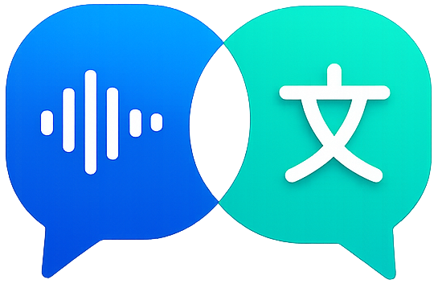

Sent to Gemini at the start of every session. {source} / {target} are replaced with the selected languages. The default depends on Mode + Direction — Reset loads the current default.
{source}
{target}
Current default: —